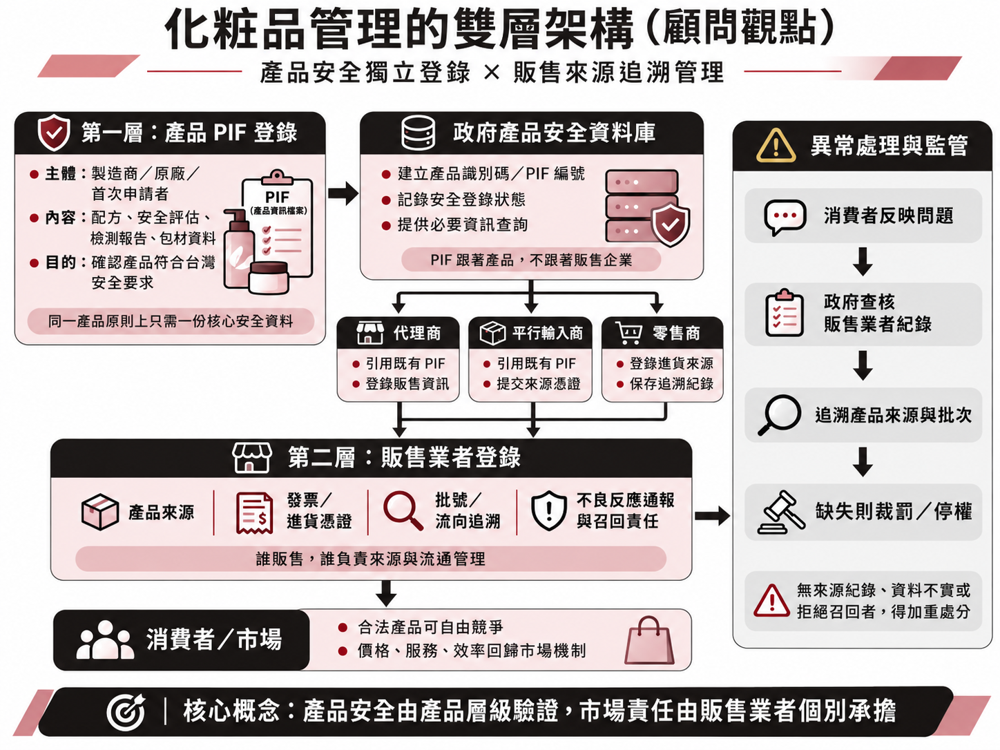

前言：一項保障消費者的制度，是否也可能改變市場競爭？
對許多中小企業而言，國際貿易的起點往往不是一份正式代理契約，而是一次小規模的市場嘗試。
企業可能在日本、韓國或歐美市場發現具有潛力的美妝產品，透過合法零售通路少量採購，觀察台灣消費者的接受程度，再依據銷售表現決定是否擴大進口，甚至與品牌原廠洽談正式代理合作。
這種「先驗證市場、再擴大投資」的經營模式，是中小企業降低創業與新市場開發風險的重要方式，也使不同規模的企業都有機會參與國際貿易。
然而，隨著台灣化粧品產品資訊檔案（Product Information File，以下簡稱 PIF）制度於 2026 年 7 月 1 日進入全面實施階段，部分傳統的市場進入模式也面臨新的挑戰。
PIF 制度要求符合規定的化粧品製造或輸入業者，在產品上市前建立完整的產品安全資訊，包括成分含量、物理化學特性、必要試驗報告及安全評估資料等。其目的在於強化產品安全管理，保障消費者權益。
從公共安全的角度而言，這項制度具有明確的正當性。然而，從產業經濟與企業經營的角度來看，問題不只是產品是否安全，更在於制度如何確認產品安全，以及確認安全所產生的成本，究竟由誰承擔。
當相同產品因為販售企業不同，而產生重複的資料取得與合規要求時，制度是否可能無形中提高中小企業的市場進入門檻，甚至改變原廠、代理商與平行輸入商之間的競爭關係？
一、從產品安全到企業責任：PIF 制度的管理邏輯
1. 產品安全管理與市場流通管理應該分開
依據現行《化粧品衛生安全管理法》，符合規定的製造或輸入業者，必須完成產品登錄並建立 PIF。現行 PIF 原則上由業者自行保存，供主管機關查核，而不是事前將完整檔案提交政府逐件審核。
另一方面，即使相同產品已由其他企業在台灣完成登錄，新的輸入業者仍須自行辦理產品登錄，並履行相應的 PIF 建檔義務。
這樣的制度安排，有助於確立每一家輸入業者的法律責任，卻也帶出一項值得思考的管理問題：
產品本身的安全性，是否應該與販售企業的身分分開管理？
假設某日本品牌的乳液，已由正式代理商引進台灣，並具有完整的安全評估資料。另一家中小企業透過日本合法零售通路取得完全相同的原裝產品，希望在台灣販售。
從產品本身來看，只要製造來源、配方與必要安全規格一致，產品的基本安全特性並不會因為由哪一家企業進口而改變。
但從市場流通來看，兩家企業確實具有不同的進貨來源、物流方式、庫存管理與消費者責任。
換言之，產品安全證據具有共通性，企業的流通責任則具有個別性。
若將兩者全部綁定在單一輸入業者身上，便可能產生不必要的重複合規成本。
2. PIF 的資訊要求，可能形成實質貿易障礙
現行 PIF 共包含 16 項資料，其中全成分及各別含量、物理化學特性、防腐效能、功能評估、包裝材質及產品安全評估等項目，對中小型平行輸入商而言，可能具有相當高的取得難度。
部分資訊可以透過公開資料、第三方檢驗或專業安全評估取得，但某些關鍵資料仍高度依賴原廠配合。
正式代理商通常能透過合作關係向原廠取得文件；平行輸入商卻可能因為沒有直接契約關係，而難以取得同等資訊。
此時，真正影響企業能否進入市場的，不一定是產品安全與否，而是企業取得安全證據的能力。
從經濟學角度來看，這是一種因資訊不對稱與合規成本產生的市場進入障礙，也可能形成具有非關稅貿易障礙效果的市場限制。
值得注意的是，這並不代表制度在法律上禁止平行輸入，而是原本以安全管理為目的的資訊要求，可能在實務上產生限制平行輸入的效果。
3. 管理制度的另一種可能：產品安全與販售責任的雙層管理
現行制度已有產品登錄公開查詢平台，也已有供應來源與流向紀錄要求。問題在於，這些資料能否進一步整合，形成更有效率的產品安全管理機制。
從管理效率與市場競爭的角度來看，現行 PIF 制度值得進一步思考的，不是是否應降低產品安全標準，而是產品安全驗證與企業販售責任，是否有必要由不同業者重複承擔相同的資料建置義務？ 一種值得探討的方向，是將管理架構區分為「產品 PIF 登錄」與「販售業者登錄」兩個層次。
第一層：產品 PIF 登錄
由製造商、原廠或具備完整安全證據的首次申請者，依據台灣法規提出產品安全資訊，經必要驗證後建立獨立的產品安全紀錄。相同產品原則上共用一份有效的核心安全資料，而非因代理商或輸入業者不同而重複建檔。
第二層：販售業者登錄
無論正式代理商、平行輸入商或一般零售商，只要透過合法管道取得已完成安全登錄的產品，即可在申報販售資訊後進入市場。業者須提出產品來源、發票或進貨憑證、批號及流向追溯方式，並承擔不良反應通報與召回管理責任，而不必重新取得原廠的完整安全資料。
當產品發生問題時，主管機關可透過產品安全紀錄與販售者資料，追查產品來源及流通情形。對於來源不明、資料不實或拒絕履行召回義務的業者，則可依違規程度處以裁罰，重大違規者甚至可考慮限制新增產品登錄或暫停販售資格。
這樣的分層管理思維，可能產生五項效益：
降低重複合規成本： 相同產品共用既有安全證據，減少企業重複蒐集及建立資料的支出。
促進中小企業參與： 降低新創與平行輸入業者的市場進入門檻，保留少量試賣及新商品導入的機會。
維持市場競爭： 讓企業透過採購規模、經營效率、價格與服務競爭，而非依賴原廠安全文件的排他性取得優勢。
強化政府監管效率： 整合產品安全資料與販售來源紀錄，提高查核、追溯及異常處理能力。
提升消費者保障： 讓消費者能查詢產品安全登錄狀態，同時享有更透明的商品資訊及多元的市場選擇。
當然，這類模式仍須評估事前驗證的行政成本、資料一致性、資訊保護及實施所需的法律授權，並非現行制度已全面具備的功能。
產品安全應由制度有效把關，販售責任應由企業個別承擔，而商品價格與市場競爭力，則應回歸市場機制。
PIF 制度的長期價值，不僅在於建立更完整的產品安全規範，更在於如何透過合理且有效率的管理方式，在保障消費者的同時，維持中小企業的參與機會與整體市場活力。

二、從市場進入障礙到產業集中：安全管理的長期經濟效果
1. 中小企業最重要的競爭優勢，是嘗試市場的能力
大型企業與中小企業在資金、採購規模、人力及法遵資源方面，本來就存在差異。
對大型企業而言，一項產品的檢測、文件建置與安全評估費用，可以透過大量銷售分攤。
但對於一家尚未確認市場需求的新創企業而言，同樣的固定成本，可能足以影響整項投資決策。
尤其在國際貿易初期，產品是否受到消費者歡迎、能否找到適當客群、合理售價為何，往往需要透過市場測試才能得知。
當企業必須在市場驗證之前，就承擔較高的法遵成本，原本可逐步投入的資金，便轉變為前期的沉沒成本風險。
這可能使部分中小企業放棄原本具有潛力的新商品，轉而選擇已經成熟、資料取得容易，或由大型品牌提供完整代理支援的產品。
如果這種情況持續發生，市場上新品牌與新商品的引進就會逐漸減緩或消失。
2. 法遵資訊可能改變原廠與通路商的議價能力
在一般商業活動中，原廠與代理商的議價能力，來自品牌價值、採購量、行銷投入及通路資源等因素。
但當產品能否上市，還取決於能否取得原廠所掌握的安全資料時，原廠可能額外取得一種資訊優勢。
這使得中小型貿易商在尚未確認產品市場潛力之前，就可能需要與原廠建立合作關係，甚至接受較高的最低採購量或其他商業條件。
如此一來，原本應由市場銷售結果決定的代理談判，可能被迫提前發生。甚至可能花了高成本卻最終未能獲得實質收益。
對於原廠及既有代理商，這種制度效果可能提高通路管理的穩定性；但對新進企業而言，也可能形成額外的進入限制與未知風險。
因此，真正值得關注的並不是企業規模大小，而是競爭優勢究竟來自經營效率，還是來自其他業者難以取得的合規資訊。
3. 競爭減少，最終承擔成本的可能是消費者
從消費者角度來看，產品安全是基本需求，但並不是唯一需求。
價格、品牌選擇、產品功能、取得便利性及售後服務，同樣影響消費者福利。
正式代理商通常需要承擔品牌推廣、通路經營與售後服務等成本，其售價較高未必代表競爭失衡。
然而，平行輸入商及其他通路業者的存在，可以提供不同的採購模式、服務內容與價格選擇，形成市場競爭壓力。
如果市場進入成本提高，使新進業者逐漸減少，長期可能出現商品選擇減少、價格競爭趨緩及市場集中度提高的情況，最終提高終端售價。
這些並非 PIF 制度必然造成的結果，而是值得追蹤的經濟風險。
更重要的是，當市場進入障礙普遍存在於多個產業時，原本具有創新能力與市場敏感度的小型企業，可能逐漸失去參與競爭的機會。
長期而言，這不只關係到個別企業的生存，也可能影響創業活動、就業、產業多樣性及市場活力。
對政府而言，相關管理制度可能增加產品安全保障與市場秩序，但若同時抑制新進企業、投資與交易規模，也可能影響長期產業成長及稅基發展，最終影響整體經濟發展與稅收。
因此，政府管理的經濟效益，不宜只觀察違規件數或制度遵循率，也應關注產品安全改善是否與企業成本及市場競爭變化相稱。
三、中小企業如何因應：從產品試賣轉向合規導向的市場開發
在制度尚未改變之前，中小企業仍然必須依照現行法規經營。
因此，對於有意引進國際美妝產品的中小企業與新創品牌而言，最重要的不是等待制度改變，而是重新調整市場進入策略。
首先，企業應將法規可行性納入產品開發的最初階段。
在選擇海外品牌時，除了產品特色、售價與市場需求，也必須評估原廠文件的取得可能性、合規成本及預期銷售規模。
其次，市場驗證應盡可能前移至正式投入商品之前。
企業可以透過消費者訪談、市場調查、產品概念測試、價格接受度分析等方式，先驗證需求，再決定是否承擔產品引進成本。涉及實際販售或向消費者提供試用品時，仍須先符合上市相關法規。
第三，企業應善用合作模式降低單獨承擔的成本。
與已完成合規的台灣輸入商合作，或優先選擇願意提供安全資料的海外品牌。部分中小企業也可以透過共同採購、專業顧問或第三方合規服務，降低資訊蒐集與行政管理負擔。
最後，來源追溯應成為企業日常管理能力，而不只是被查核時才準備的文件。
無論企業規模大小，建立供應商資料、進貨憑證、批次資訊、庫存紀錄及客訴處理程序，不僅能降低法律風險，也有助於提升消費者信任。
對新創企業而言，未來的市場開發能力，將不只是能否找到好產品，更包括能否在資源有限的條件下，有效率地完成產品驗證、法遵管理與市場測試。
好的市場管理，不只要確保安全，也應維持競爭
化粧品 PIF 制度的推動，反映出台灣產品安全管理逐漸朝向更完整的科學評估與業者責任制度發展。
這項制度所追求的消費者安全，具有重要的公共價值。
然而，管理制度的效益，不應僅由規範是否嚴格衡量，也需要評估制度能否有效預防危害，以及企業與社會為此付出的成本是否合理。
從管理效率的角度，可以進一步思考幾個方向：提高既有產品登錄與安全資訊的透明度；評估產品層級安全資料的驗證與合理重複利用；將販售業者的來源申報、流向追溯與責任管理進一步數位化；以及透過事前風險管理與持續市場查核，提升監管的預防效果。
其中，產品 PIF 與販售業者管理的分層思維，提供了一種值得討論的替代管理模式。相關改善是否能透過行政程序完成，或需要有限度的法規調整，仍須進一步評估。
對企業而言，大型企業因規模經濟取得成本優勢，是正常的市場競爭；中小企業憑藉市場敏感度、經營效率與創新能力取得機會，也同樣是健全市場的重要組成。
真正有效的市場管理，應該讓所有產品接受必要的安全要求，讓所有販售業者承擔相應責任，並讓企業回到價格、服務、品質與經營效率的競爭。
當產品安全獲得保障，市場也能保有開放性與多元選擇時，消費者、企業與整體產業，才有機會共同獲益。
參考資料
《化粧品衛生安全管理法》，全國法規資料庫。
《化粧品產品資訊檔案管理辦法》，全國法規資料庫。
《化粧品產品供應來源及流向資料管理辦法》，全國法規資料庫。
衛生福利部食品藥物管理署：化粧品產品登錄專區。
衛生福利部食品藥物管理署：PIF 分階段實施說明。
本文為產業經濟與企業管理觀點之分析，所提出的制度改善方向屬管理模式的可能性探討，並非現行法規已採行的措施。